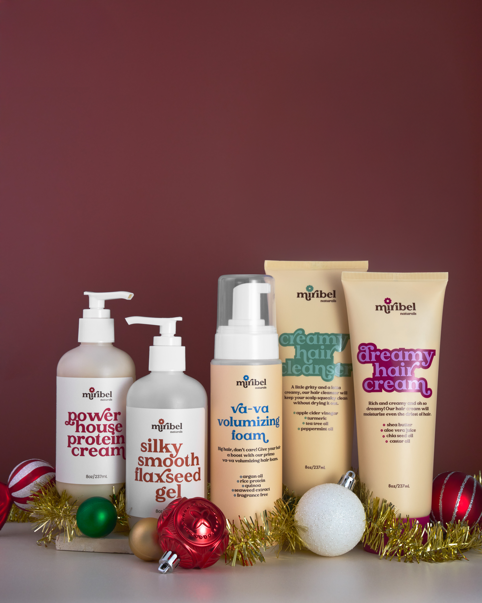
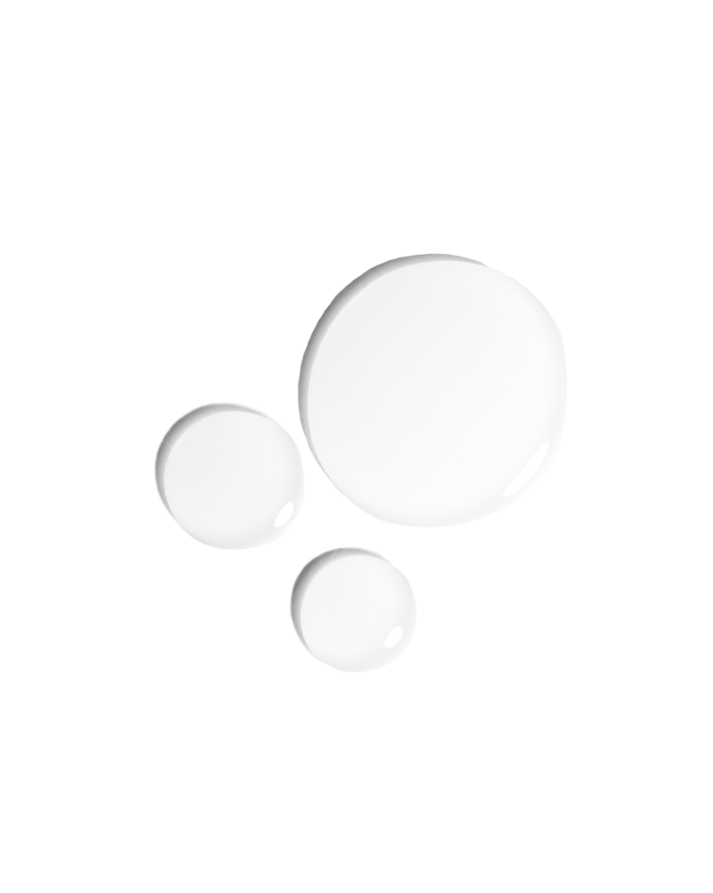
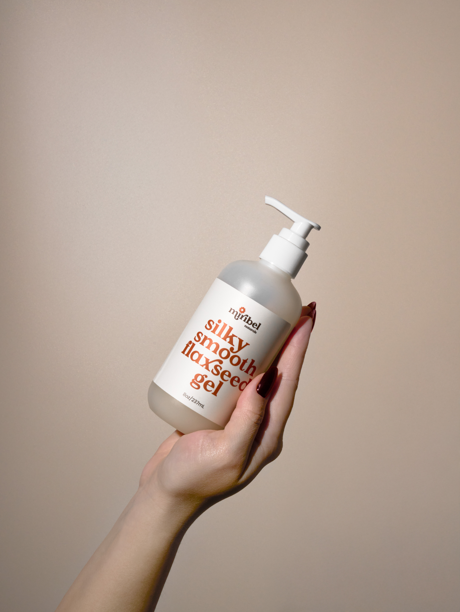

I did this one for a client. The most difficult part about it were hands.

Here, I needed to clean it and make some adjustments. These bottles I had to individually cut out and place them on white background..These hairbrushes were pretty easy to work with, just to clean and a bit work with color.For this photo, I had to cut out each brush and combine them in one picture. I had to imitate the fall. I had to clean every single leaf for this one.

I had trouble cutting the shape out of the original background.This photo I did for my course, when I was practicing.

My favorite work with a hand, skin.